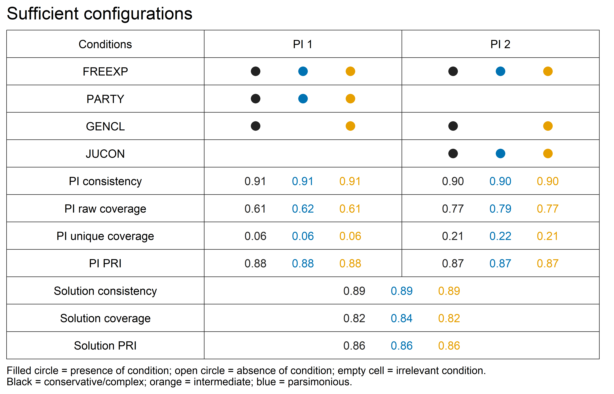

# Conservative solution
vdem_con
#>
#> M1: FREEXP*PARTY*GENCL + FREEXP*GENCL*JUCON -> CIVSOC
#>
#> inclS PRI covS covU cases
#> -------------------------------------------------------------------------------------------------------------------------------------------------------------------------------------------------------------------------------------------------------------------------------------------------------------------------------------------------------------------------------------------
#> 1 FREEXP*PARTY*GENCL 0.913 0.883 0.610 0.056 Bolivia,Comoros; Ghana,Honduras,Pakistan,Senegal,India,Kenya,Lebanon,Nigeria,Tanzania,Benin,Bhutan,Nepal,Zambia,Cape Verde,Timor-Leste,Jordan,Lesotho,Morocco,Sierra Leone,The Gambia,Sri Lanka,Somaliland,Zanzibar
#> 2 FREEXP*GENCL*JUCON 0.896 0.873 0.767 0.213 Mali,Philippines,Uganda,Mozambique,Ivory Coast,Liberia,Malawi,Papua New Guinea,Tunisia,Sao Tome and Principe,Solomon Islands,Vanuatu; Ghana,Honduras,Pakistan,Senegal,India,Kenya,Lebanon,Nigeria,Tanzania,Benin,Bhutan,Nepal,Zambia,Cape Verde,Timor-Leste,Jordan,Lesotho,Morocco,Sierra Leone,The Gambia,Sri Lanka,Somaliland,Zanzibar
#> -------------------------------------------------------------------------------------------------------------------------------------------------------------------------------------------------------------------------------------------------------------------------------------------------------------------------------------------------------------------------------------------
#> M1 0.888 0.859 0.823
# Intermediate solution
vdem_int
#>
#> From C1P1:
#>
#> M1: FREEXP*PARTY*GENCL + FREEXP*GENCL*JUCON -> CIVSOC
#>
#> inclS PRI covS covU cases
#> -------------------------------------------------------------------------------------------------------------------------------------------------------------------------------------------------------------------------------------------------------------------------------------------------------------------------------------------------------------------------------------------
#> 1 FREEXP*PARTY*GENCL 0.913 0.883 0.610 0.056 Bolivia,Comoros; Ghana,Honduras,Pakistan,Senegal,India,Kenya,Lebanon,Nigeria,Tanzania,Benin,Bhutan,Nepal,Zambia,Cape Verde,Timor-Leste,Jordan,Lesotho,Morocco,Sierra Leone,The Gambia,Sri Lanka,Somaliland,Zanzibar
#> 2 FREEXP*GENCL*JUCON 0.896 0.873 0.767 0.213 Mali,Philippines,Uganda,Mozambique,Ivory Coast,Liberia,Malawi,Papua New Guinea,Tunisia,Sao Tome and Principe,Solomon Islands,Vanuatu; Ghana,Honduras,Pakistan,Senegal,India,Kenya,Lebanon,Nigeria,Tanzania,Benin,Bhutan,Nepal,Zambia,Cape Verde,Timor-Leste,Jordan,Lesotho,Morocco,Sierra Leone,The Gambia,Sri Lanka,Somaliland,Zanzibar
#> -------------------------------------------------------------------------------------------------------------------------------------------------------------------------------------------------------------------------------------------------------------------------------------------------------------------------------------------------------------------------------------------
#> M1 0.888 0.859 0.823
# Parsimonious solution
vdem_par
#>
#> M1: FREEXP*PARTY + FREEXP*JUCON -> CIVSOC
#>
#> inclS PRI covS covU cases
#> -------------------------------------------------------------------------------------------------------------------------------------------------------------------------------------------------------------------------------------------------------------------------------------------------------------------------------------------------------------------------------------
#> 1 FREEXP*PARTY 0.913 0.884 0.619 0.058 Bolivia,Comoros; Ghana,Honduras,Pakistan,Senegal,India,Kenya,Lebanon,Nigeria,Tanzania,Benin,Bhutan,Nepal,Zambia,Cape Verde,Timor-Leste,Jordan,Lesotho,Morocco,Sierra Leone,The Gambia,Sri Lanka,Somaliland,Zanzibar
#> 2 FREEXP*JUCON 0.897 0.874 0.786 0.224 Mali,Philippines,Uganda,Mozambique,Ivory Coast,Liberia,Malawi,Papua New Guinea,Tunisia,Sao Tome and Principe,Solomon Islands,Vanuatu; Ghana,Honduras,Pakistan,Senegal,India,Kenya,Lebanon,Nigeria,Tanzania,Benin,Bhutan,Nepal,Zambia,Cape Verde,Timor-Leste,Jordan,Lesotho,Morocco,Sierra Leone,The Gambia,Sri Lanka,Somaliland,Zanzibar
#> -------------------------------------------------------------------------------------------------------------------------------------------------------------------------------------------------------------------------------------------------------------------------------------------------------------------------------------------------------------------------------------
#> M1 0.889 0.861 0.8444 Presenting the Solutions
4.1 Inspecting the Reference Minimizations
As you know, when a QCA::minimize() result is printed, it neatly presents the Boolean solution formula, together with parameters of fit for its prime implicants and for the solution as a whole. For each prime implicant, the output reports consistency, PRI, raw coverage, and unique coverage. It then reports solution consistency, solution PRI, and solution coverage for the disjunction of those prime implicants. Intermediate solutions are additionally identified by their C#P# branch labels.
The three results from the reference analysis can therefore be inspected directly:
In this analysis, the conservative and intermediate solutions are identical:
\[ \text{FREEXP} * \text{PARTY} * \text{GENCL} + \text{FREEXP} * \text{GENCL} * \text{JUCON} \rightarrow \text{CIVSOC}. \]
The equality of the two formulas follows from the treatment of logical remainders. Here, the intermediate minimization was designed to use only simplifying assumptions that qualify as easy counterfactuals under the specified directional expectations stored in vdem_dir_exp. The following components identify the available simplifying assumptions and their classification for the selected intermediate branch:
# Available simplifying assumptions
vdem_int$SA
#> $M1
#> FREEXP PARTY GENCL JUCON
#> 10 1 0 0 1
#> 13 1 1 0 0
#> 14 1 1 0 1
# Easy counterfactuals
vdem_int$i.sol$C1P1$EC
#> [1] V1 V2 V3 V4
#> <0 rows> (or 0-length row.names)
# Difficult counterfactuals
vdem_int$i.sol$C1P1$DC
#> FREEXP PARTY GENCL JUCON
#> 10 1 0 0 1
#> 13 1 1 0 0
#> 14 1 1 0 1vdem_int$SA$M1 contains the three rows of logical remainders from the truth table to be used as simplifying assumptions. The empty EC component shows that none of them qualifies as an easy counterfactual; all three appear, instead, in DC as difficult ones. And since the intermediate minimization does not use those difficult counterfactuals, its result coincides with the conservative solution.
The first prime implicant, FREEXP*PARTY*GENCL, is the conjunction (\(*\)) of freedom of expression and alternative sources of information, institutionalized political parties, and women’s civil liberties. The second, FREEXP*GENCL*JUCON, combines freedom of expression and alternative sources of information, women’s civil liberties, and judicial constraints on the executive. Their disjunction (\(+\)) is a good example of equifinality: the solution identifies two alternative conjunctions that are sufficient for membership in the robust civil society outcome.
At the solution level, consistency of 0.888 indicates the degree to which membership in the disjunction is a subset of membership in CIVSOC. PRI of 0.859 discounts membership that the solution shares simultaneously with CIVSOC and its negation, thereby assessing whether the sufficient relation is directed toward robust civil society rather than also toward its absence. Finally, solution coverage of 0.823 shows that the disjunction covers 82.3% of the total membership in robust civil society represented in the analysis.
The parsimonious minimization uses the three remaining simplifying assumptions shown below because, unlike the intermediate minimization, it is not restricted by directional expectations.
vdem_par$SA$M1
#> FREEXP PARTY GENCL JUCON
#> 10 1 0 0 1
#> 13 1 1 0 0
#> 14 1 1 0 1Consequently, GENCL is shown to be redundant and is cut from both prime implicants:
\[ \text{FREEXP} * \text{PARTY} + \text{FREEXP} * \text{JUCON} \rightarrow \text{CIVSOC}. \]
In this solution, each parsimonious prime implicant is a superset of the corresponding conservative and intermediate term. Removing GENCL relaxes one membership requirement in each conjunction: for every case in the calibrated data, membership in FREEXP*PARTY is at least as high as membership in FREEXP*PARTY*GENCL, and the same holds for FREEXP*JUCON relative to FREEXP*GENCL*JUCON. The resulting expansion of the two prime implicants increases solution coverage from 0.823 to 0.844. Solution consistency changes only from 0.888 to 0.889, while solution PRI changes from 0.859 to 0.861.
4.2 Bringing the Solutions into One Table
So, although QCA’s native print method is useful for inspecting one minimization result at a time, comparing solution types and presenting them in tandem requires the analyst to align corresponding prime implicants while also keeping track of model identifiers and intermediate-branch labels. The printed output does not currently provide a rectangular object that can be filtered, exported, or passed directly to another presentation format.
Luckily, sol.df() extracts the solution information stored in one or more QCA::minimize() results and returns an ordinary data frame with one row per selected prime implicant. The arguments conservative, parsimonious, and intermediate each accept a minimization result of class QCA_min and default to NULL; at least one of them must be supplied. The returned columns identify the solution type, model, intermediate branch, and prime implicant; report prime-implicant- and solution-level parameters of fit; and optionally retain case labels. Importantly, the function does not rebuild the truth table or rerun minimization.
The solution-selection arguments determine which parts of the supplied minimization results enter the table. solution defaults to "all" if not provided, which extracts every supplied solution type. A single type can instead be requested with "con" or "conservative", "int" or "intermediate", and "par" or "parsimonious". which_M is a positive integer that defaults to 1; when a minimization result contains several models, it selects the model stored at that position. For intermediate solutions, i_mode defaults to "all" and therefore extracts every stored intermediate branch when branches = NULL; if i_mode = "C1P1", for example, it would restrict extraction to that branch only. Alternatively, branches can contain the exact names of one or more branches and, when supplied, overrides i_mode.
The remaining arguments control the contents and formatting of the returned table. include_cases = TRUE, the default, retains a stored cases field when one is available; otherwise, the function attempts to reconstruct case labels from the prime-implicant membership scores in pims, assigning cases with membership of at least 0.5. With include_cases = FALSE, the Cases column remains in the table but contains the missing-value marker. pi_incl_cut = NULL retains every extracted prime implicant; and a finite numeric value removes rows whose prime-implicant consistency is below that cutoff after extraction, without recalculating the solution. Consequently, the solution-level parameters of fit still refer to the original solution even if the table no longer displays all of its prime implicants. digits = NULL leaves numeric values unrounded, whereas a non-negative integer rounds every numeric column in the returned data frame. na_string = "-" supplies the default marker for unavailable non-numeric fields, and verbose = FALSE suppresses extraction messages; setting it to TRUE reports which solution type is being processed without changing the result.
For the reference analysis, the call below extracts all three supplied solution types, omits case labels, and rounds the numeric columns to two decimal places.
The call includes i_mode = "C1P1" and which_M = 1 only for didactic purposes: the former selects the intermediate branch, while the latter selects the first stored model when multiple model-specific outputs are available. In this example, however, the results contain only one branch and one model anyway, so neither argument is strictly necessary.
vdem_solutions <- sol.df(
conservative = vdem_con,
parsimonious = vdem_par,
intermediate = vdem_int,
solution = "all",
which_M = 1,
i_mode = "C1P1",
include_cases = FALSE,
digits = 2
)
vdem_solutions
#> Solution Model Intermediate_CnPn Prime_Implicants Consistency_PI PRI_PI Raw_Coverage_PI Unique_Coverage_PI Solution_Consistency Solution_PRI Solution_Coverage Cases
#> 1 Conservative - - FREEXP*PARTY*GENCL 0.91 0.88 0.61 0.06 0.89 0.86 0.82 -
#> 2 Conservative - - FREEXP*GENCL*JUCON 0.90 0.87 0.77 0.21 0.89 0.86 0.82 -
#> 3 Parsimonious - - FREEXP*PARTY 0.91 0.88 0.62 0.06 0.89 0.86 0.84 -
#> 4 Parsimonious - - FREEXP*JUCON 0.90 0.87 0.79 0.22 0.89 0.86 0.84 -
#> 5 Intermediate - C1P1 FREEXP*PARTY*GENCL 0.91 0.88 0.61 0.06 0.89 0.86 0.82 -
#> 6 Intermediate - C1P1 FREEXP*GENCL*JUCON 0.90 0.87 0.77 0.21 0.89 0.86 0.82 -Here, the six rows correspond to the two prime implicants extracted for each of the three solution types. For each prime implicant, the four columns report distinct parameters of fit: Consistency_PI evaluates the degree to which its membership is a subset of membership in CIVSOC, while PRI_PI penalizes membership shared simultaneously with CIVSOC and its negation. Raw_Coverage_PI reports how much membership in CIVSOC the prime implicant covers, including membership that another prime implicant in the same solution may also cover, whereas Unique_Coverage_PI reports the share covered exclusively by that prime implicant. Because prime implicants can overlap, their raw coverage values are not additive.
Solution_Consistency, Solution_PRI, and Solution_Coverage report the parameters of fit for the complete solution. Since these values belong to the solution formula rather than to any individual prime implicant, they are repeated across the rows of the same solution only to preserve the solution-level context of each extracted prime implicant.
The conservative and intermediate entries, as expected, share the same prime implicants and parameters of fit. Intermediate_CnPn nevertheless records C1P1 for the intermediate entries because those prime implicants belong to that intermediate branch. Model contains the default missing-value marker (-), given that these minimization results do not store model-specific IC$individual output. The same marker appears in Cases because we don’t want an Olympic Parade of Nations cluttering the table.
Now, because vdem_solutions is an ordinary data frame, it can be passed to any preferred export function! For example:
writexl::write_xlsx(vdem_solutions, "results.xlsx")Helpful little trick, isn’t it?
4.3 Charting the Solution Structure
But we can enhance our presentation even further! sol.chart() takes the data frame returned by sol.df() as its required argument x and returns a ggplot object. It parses the Boolean expression of every prime implicant and aligns related terms across conservative, intermediate, and parsimonious solutions. The current implementation accepts prime implicants from crisp and fuzzy sets, but not the bracket notation used for mvQCA.
The arguments that select and organize the plotted evidence operate on rows already present in x. conditions = NULL infers the condition order from their first appearance in the prime implicants; supplying a character vector fixes both the included condition rows and their order. solution_types defaults to c("conservative", "intermediate", "parsimonious") and controls which solution types are displayed and their plotting order. It accepts the same abbreviated or full solution names as sol.df(), but it does not accept "all". model = NULL proceeds when the table contains no model identifier or only one; a table containing several model identifiers requires a positive integer selecting one of them. Similarly, intermediate_branch = NULL is sufficient when no more than one intermediate branch is present; when several branches remain, one branch name must be supplied.
By default, show_cases, show_pi_fit, and show_solution_fit are all TRUE, so the chart includes case labels, the four prime-implicant parameters of fit, and the three solution-level parameters of fit. Setting any of these arguments to FALSE removes the corresponding section. Case labels are taken from the most detailed available prime implicant in each aligned column. digits = 2 controls the displayed precision of the fit statistics.
The default colors are black for conservative solutions, orange for intermediate solutions, and blue for parsimonious solutions; a named colors vector can replace any of them. With title = NULL, the title is Sufficient configurations. note = TRUE includes the built-in symbol-and-color caption, while legend = FALSE suppresses the legends. Because that caption names the default palette, a chart with custom colors should set note = FALSE and add a corresponding caption to the returned ggplot object. point_size = 3.2 and text_size = 3.3 control symbol and text size. theme defaults to the qcaERT plotting theme but accepts another ggplot2 theme.
In the reference chart, filled circles represent condition presence, open circles represent condition absence, and empty cells indicate that a condition is irrelevant to the displayed prime implicant. The call below fixes the condition order with vdem_conds, displays the solution types in the common conservative, parsimonious, and intermediate order, omits case labels, retains both levels of parameters of fit, and displays them to two decimal places.
sol.chart(
vdem_solutions,
conditions = vdem_conds,
solution_types = c(
"conservative",
"parsimonious",
"intermediate"
),
show_cases = FALSE,
show_pi_fit = TRUE,
show_solution_fit = TRUE,
digits = 2
)
Now, we can properly visualize that FREEXP*PARTY*GENCL is aligned with FREEXP*PARTY, while FREEXP*GENCL*JUCON is aligned with FREEXP*JUCON. In each pair, the parsimonious prime implicant is a superset of the conservative and intermediate prime implicant because removing GENCL broadens the conjunction. FREEXP remains present in all four distinct prime implicants, while PARTY and JUCON distinguish the two equifinal sufficient terms. The alignment therefore presents the set-theoretic relation among the three solution types.
The vdem_solutions table and its chart provide a common presentation of the baseline prime implicants and their parameters of fit. Next, Part II retains these calibrated memberships and baseline solution formulas while examining whether and how they change under alternative analytical choices, beginning with the calibration anchors that gave the raw V-Dem scores their set meanings.